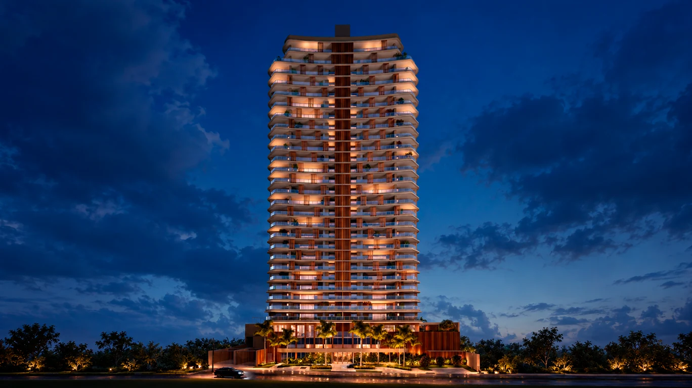
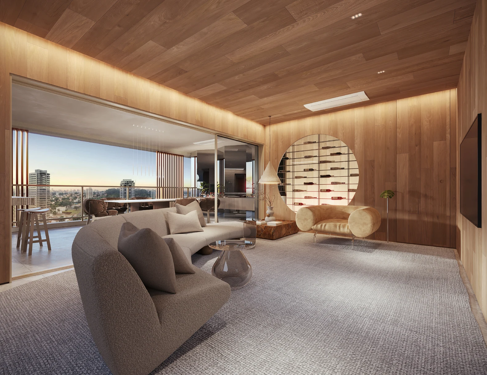
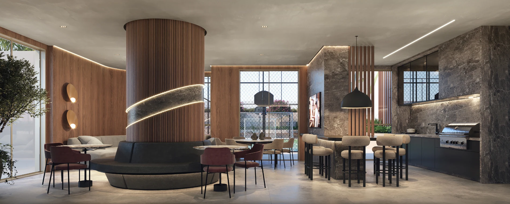
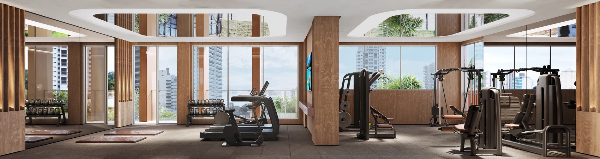
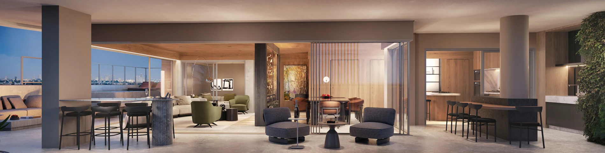

ALTAMIRA · UBERLÂNDIA, MG
Espaço para os
próximos capítulos.
Um olhar sobre o morar, entre a amplitude dos ambientes e o tempo de viver cada detalhe.
Conheça o LorenPresença na cidade.
Respiro na sua rotina.
No Altamira, o Loren apresenta uma proposta de morar que aproxima arquitetura, convivência e bem-estar.
Apartamentos com ambientes integrados, varanda gourmet e hall privativo. Um endereço pensado para acompanhar diferentes momentos da vida, com opções de planta para conhecer com calma.
Explore as possibilidades de planta- 01
- Torre única
- 3 ou 4
- Vagas, conforme a unidade
- Hall
- Privativo nos apartamentos
- Altamira
- Uberlândia · Minas Gerais
Características apresentadas no book. Configuração, medidas e condições de cada unidade devem ser confirmadas nos documentos do empreendimento.

AMPLITUDE PARA CONVIVER
A casa se abre.
A vida acontece.
Sala, cozinha e varanda se conectam em uma composição que valoriza os encontros e a luz natural.
Na área íntima, as plantas apresentam suíte máster com closet e varanda. A opção de sala ampliada acrescenta outras possibilidades para trabalhar e receber em casa.
Veja as plantas em detalheUm andar para
muitos momentos.
Do encontro à pausa. O pilotis reúne ambientes para lazer, atividade física, trabalho e conveniência.


Receber & conviver
- Salão de festas e churrasqueira
- Espaço gourmet
- Pool house e bar de apoio
- Sala de jogos
Movimento & bem-estar
- Piscina, solário e deck molhado
- Quadras poliesportiva e de beach tennis
- Academia e sauna
- Sala de massagem e espaço beauty
Rotina & descobertas
- Brinquedoteca e playground
- Coworking
- Espaço delivery
- Minimercado
Explore a implantação do lazer
Conheça cada
possibilidade.
Compare as plantas do book. Os desenhos são ilustrativos; a confirmação de áreas e configurações depende da documentação de cada unidade.
APARTAMENTO TIPO
247,10 m²*
7º ao 24º pavimento · conforme planta
- 4 suítes
- Suíte máster com closet e varanda
- Suíte adicional com varanda
- Varanda gourmet e hall privativo
*A planta da p. 45 informa 247,10 m²; a ficha técnica da p. 52 informa 247,13 m² para o tipo. Área definitiva a confirmar.
Fonte: book do empreendimento, p. 45 e 52.

OUTRA PERSPECTIVA DO MORAR
Mais horizonte.
Novas possibilidades.
O book apresenta cobertura duplex de 428,58 m², com acesso de elevador aos dois pavimentos e terraço descoberto com previsão para piscina, sem equipamentos.
Explore a cobertura Configuração de suítes divergente entre planta e ficha técnica; consulte a ressalva na seção de plantas. Imagem ilustrativa.Conexões com
a sua cidade.
Avenida Presidente Médici, 190
Altamira · Uberlândia, MG
O mapa do book destaca a região do Cajubá Country Club, do Instituto Federal do Triângulo Mineiro e do Shopping Village Altamira.
Referências de localização apresentadas no material original. Tempos de percurso variam; não representam garantia de deslocamento.
Abrir endereço no mapaConhecer bem.
Escolher com clareza.
Uma boa conversa começa com informação transparente. Estas são as observações importantes do material apresentado.
Qual é a situação do registro de incorporação?
O book informa que a comercialização fica condicionada ao registro do Memorial de Incorporação no 1º Registro de Imóveis de Uberlândia e cita o protocolo nº 803300. Protocolo não é confirmação de registro concluído. O estado atual do registro não foi verificado para esta apresentação.
Esta página é informativa e não disponibiliza reserva, proposta ou pagamento.
As áreas e configurações estão confirmadas?
Há divergências no próprio book: o tipo consta com 247,10 m² na planta e 247,13 m² na ficha técnica. A cobertura aparece com cinco suítes na planta e quatro na ficha. O conjunto “7º ao 24º” e a quantidade de apartamentos tipo da ficha também precisam ser conciliados. A confirmação deve ser feita no memorial e na documentação da unidade.
As imagens mostram o empreendimento pronto?
Não. São perspectivas e plantas ilustrativas do book fornecido, incluindo equipamentos, acessórios e paisagismo. Não comprovam obra concluída, itens entregues ou vista definitiva. Prevalecem os documentos contratuais e o memorial descritivo.
Como consultar valores, disponibilidade e prazos?
Essas condições não estão confirmadas nesta página. Converse com Bruno para apurar a documentação e as informações atuais, considerando o seu objetivo e os critérios de busca. Nenhuma valorização, rentabilidade ou aprovação de crédito é prometida.
UMA CONVERSA SOBRE O SEU PRÓXIMO CAPÍTULO
O que faz sentido
para você?
Vamos esclarecer as informações do Loren e entender o que você procura em um imóvel.
Bruno Scapelli
Consultor imobiliário · My Broker
CRECI 58.771